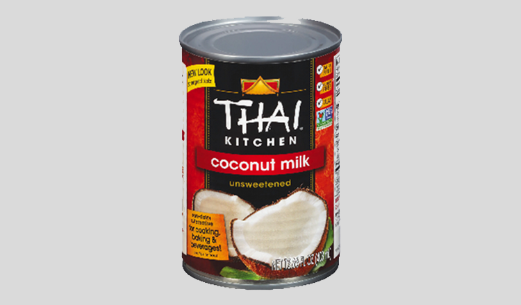

Jek Cheung.
Jek Cheung or Cambodian-style caramelized banana is similar to Domlong Cheung. Instead of the sweet potatoes, this appetizer uses the distinctive fruity flavor of banana to blend with the shredded coconuts. The rich caramel flavor is the key to this snack/appetizer which most people are very fond of.
Ingredients.
- a bundle of Nam Wah Bananas (barely ripe)
- 5oz or 140g Palm Sugar
- 1 ¼ Cup of 310ml Coconut Milk
- A pinch of Salt
- Shredded Coconut
- 1tsp Limestone paste
- 4cup or 1L Water

palm sugar

coconut milk
Instructions.
- First, add 1 tbsp of limestone paste into 1L water. Then, stir it till it dissolves. After stirring, you can keep it aside.
- Afterwards, peel off the skin of the bananas and slice each banana in half.
- Then, pour the limestone water solution into a bowl along with the bananas (only the clear water). Soak it in that limestone water solution for 30 minutes. If you use ripe bananas, soak them for only 10 minutes.
- After 30 minutes, clean the bananas until it's fully clean.
- Now, it's time to caramelize the bananas. First, put 5oz or 140g palm sugar into a pan using medium heat.
- When the sugar is boiled, pour in 1 and a quarter or 310ml of coconut milk. Stir to combine it together.
- Add a pinch of salt and stir to dissolve it. Then, put in the bananas from earlier.
- Stir it continuously using medium-low heat, until the sugar completely thickens and the bananas turn to a golden brown.
- After the sugar fully thickens into a creamy consistency, put the shredded coconut in. Then, combine the caramelized bananas together with the shredded coconut.
- Now, your Jek Cheung is ready to be served! Enjoy!
Reference.
- “Caramelized Bananas Recipe - របៀបធ្វើចេកឆឹង.” Youtube, Somar Fun, 30 Jul 2021, https://www.youtube.com/watch?v=rJiQAQhO2Bw
- Palm Sugar (image link)
- Coconut Milk (image link)
{kind=link}
{kind=link}